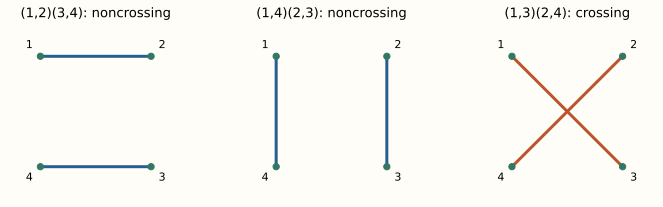

Research study
Spectral positional encodings for directed graph transformers
I tested whether graph transformers could make better use of citation direction. Giving the baseline more spectral features made the answer less clear.
Read the study ↗Mathematics & computer scienceMIT
I like neat algorithms, elegant mathematical structures, and understanding why things work.
Right now I’m interested in scientific machine learning and formal reasoning.
Six explanations of spectra, freeness, and calculating with random matrices.

Research study
I tested whether graph transformers could make better use of citation direction. Giving the baseline more spectral features made the answer less clear.
Read the study ↗I like table tennis, learning languages, Peruvian food, and debugging things I was completely sure were correct.
GitHub ↗Six explanations of spectra, freeness, and calculating with random matrices.
Research study
I tested whether graph transformers could make better use of citation direction. Giving the baseline more spectral features made the answer less clear.
Read the study ↗